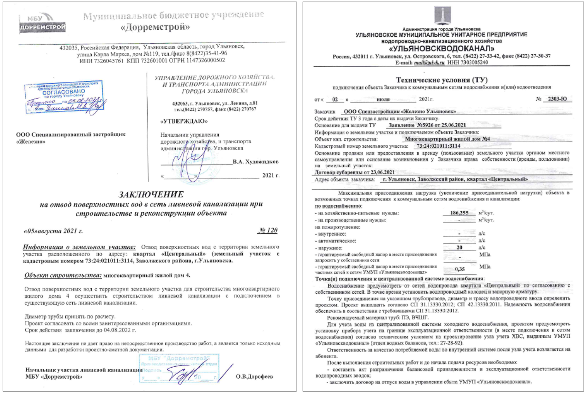
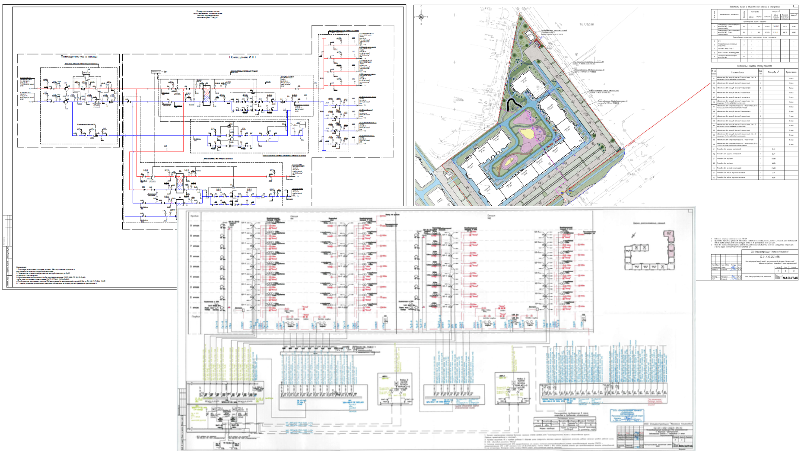
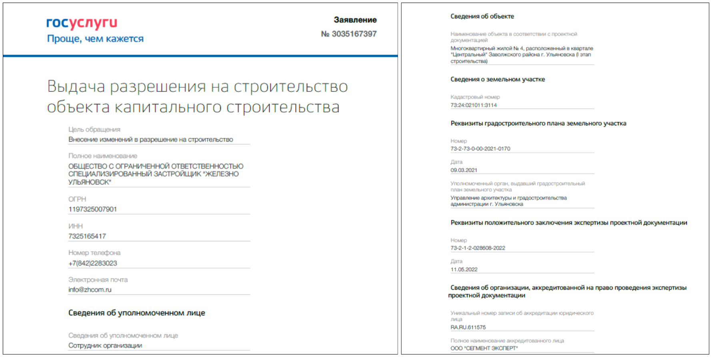

Как получить разрешение на строительство
РНС — это документ, который подтверждает соответствие проектной документации градостроительному регламенту и дает право на строительство или реконструкцию.
Получение разрешения на строительство обязательно перед началом строительных работ и регулируется Градостроительным кодексом РФ.
Условно всю процедуру делят на четыре этапа:
- Подготовка проектной документации
- Сбор необходимой документации
- Обращение в уполномоченный орган по выдачи разрешений на строительство
- Рассмотрение заявки и выдача разрешения.
Рассмотрим подробнее каждый этап.
Этап 1. Подготовка проектной документации
Включает анализ ТЗ заказчика, обследование участка (геология, геодезия, экология), разработку концепции (эскизы планировок, фасадов, благоустройства), получение ГПЗУ и предварительных ТУ от РСО на подключение к коммуникациям.

Далее — непосредственное проектирование: чертежи планов этажей, разрезы, фасады, расчеты конструкций, проектирование инженерных сетей (внутренних и наружных), спецификация оборудования, благоустройство и т.д. Все это формируется в альбомы проектной документации: АР, КР, ИОС, ПБ, ПЗ, ПОС, ОДИ, ПЗУ.
Затем проект направляется в специализированную организацию для оценки соответствия проектной документации требованиям технических регламентов. Организацией проводится проверка качества проектной документации, выявление ошибок и несоответствий экспертами, подтверждение возможности реализации заложенных в проекте идей и концепций. Ошибки, выявленные в процессе экспертизы, направляются на устранение проектной организации и должны быть отработаны в сжатые сроки.
Результатом прохождения экспертизы является положительное заключение экспертизы проектной документации. Прохождение экспертизы подробнее указано в Постановлении Правительства РФ от 05.03.2007 № 145 «О порядке организации и проведения государственной экспертизы проектной документации и результатов инженерных изысканий».
После экспертизы разделы проектной документации необходимо согласовать с ресурсно-снабжающими организациями: энергоснабжение (ИОС.1), водоснабжение и канализация (ИОС.2 и 3), отопление и вентиляция (ИОС.4), газоснабжение (ИОС.6).
Ресурсно-снабжающая организация — это организация (или ИП), которая поставляет на объект коммунальные ресурсы (электричество, вода, отопление и т.д.). Без их согласования проекта невозможно подключить объект к ресурсам. В зависимости от региона могут потребовать согласования архитектурно-градостроительного облика (цветной эскиз фасадов), въездов (раздел ПЗУ) и т.д.

Когда проект прошел экспертизу и согласование с РСО, он утверждается заказчиком — как правило, выпускается приказ «Об утверждении проектной документации».
Этап 2. Сбор необходимой документации
На этом этапе происходит сбор и, по необходимости, запрос недостающих документов для подачи заявления на получение разрешения на строительство.
Перечень документов указан в ч. 7 ст. 51 Градостроительного кодекса РФ (см. предыдущий урок):
- Правоустанавливающие документы на земельный участок (договоры аренды, выписки ЕГРН);
- Градостроительный план земельного участка;
- Результаты инженерных изысканий (отчет по геодезии и экологии);
- Проектная документация (6 основных разделов);
- Положительное заключение экспертизы проектной документации (при изменениях — дополнительно справка ГИПа);
- Согласование архитектурно-градостроительного облика;
- Иные документы согласно ч. 7 ст. 51 ГрК РФ.
Все документы должны быть оригиналами или заверенными копиями. Полномочия представителя подтверждаются доверенностью.
Этап 3. Обращение в уполномоченный орган местного самоуправления за РНС
Заявление с комплектом документов подается в уполномоченный орган местного самоуправления по выдаче разрешений на строительство — как правило, администрацию города или орган исполнительной власти (министерство).
По законодательству срок рассмотрения заявки — до 10 рабочих дней.
Законодательством предусмотрены три способа подачи: личное обращение, почтовое отправление с отметкой о вручении, через портал Госуслуг. В связи с цифровизацией приоритет — Госуслуги, но из-за ограничений по объему файлов комплект документов часто заверяют и относят лично в орган власти после предварительного согласования времени.

Этап 4. Рассмотрение заявки и выдача разрешения
На этом этапе орган власти оценивает комплект документов, проверяет наличие необходимых для решения документов, соответствие проектной документации требованиям градостроительного плана на дату выдачи, проекта планировки территории, допустимость размещения объекта в соответствии с разрешенным использованием участка. Принимается решение о выдаче разрешения на строительство.
Все зависит от скорости, опыта и навыков переговоров специалистов заказчика: в ходе проверки могут затребовать «иные» документы, предусмотренные законодательством, или предъявить необоснованные требования. Такие ситуации возникают при сложных объектах (историческая зона, стесненные условия и т.д.).
При отсутствии замечаний выдается разрешение на строительство — пока в бумажном виде представителю заявителя. Сейчас прорабатывается переход от привычной формы к реестровым записям: заявителю будет направляться уведомление о включении сведений в реестр разрешений.